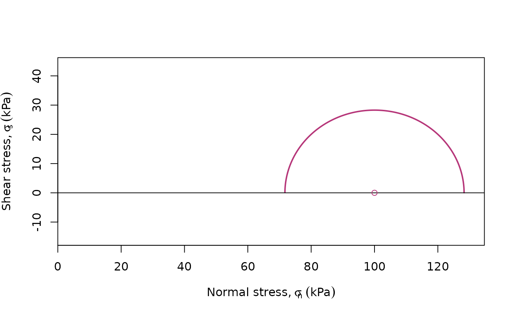
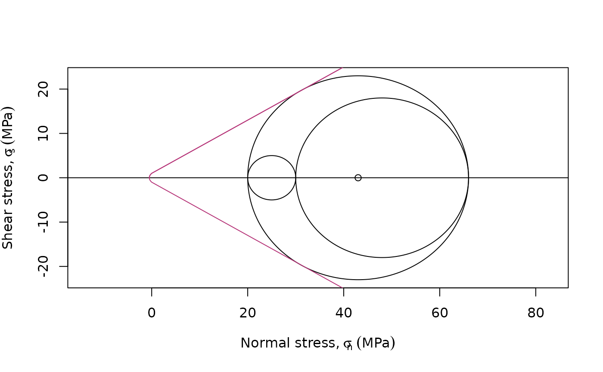

plots the Mohr Circle
Usage
Mohr_plot(
sigma_x = NA,
sigma_z = NA,
tau_xz = NA,
sigma1 = NA,
sigma2 = NA,
sigma3 = NA,
unit = "MPa",
col = "black",
n = 512,
full.circle = FALSE,
include.zero = TRUE,
xlim = NULL,
ylim = NULL,
...
)Arguments
- sigma_x
numeric. Magnitude of normal stress acting in the horizontal direction
- sigma_z
numeric. Magnitude of normal stress acting in the vertical direction
- tau_xz
numeric. Magnitude of shear stress acting on the same plane as
"sigma_x"- sigma1
numeric. Magnitude of major principal stress
- sigma2
numeric. (optional) Magnitude of intermediate principal stress. This will add the additional Mohr circles between the principal stresses.
- sigma3
numeric. Magnitude of minor principal stress
- unit
character. The unit used for magnitude of stress (
"MPa"by default).NULLif unitless.- col
color for Mohr circle.
- n
integer. Resolution given amount of points along the generated path representing the full Mohr circle (
512by default).- full.circle
logical. Should the complete Mohr circle be shown, or only the upper (positive shear stress) part of the circle?
- include.zero
logical. the plot range be extended to include normal_stress = 0?
- xlim, ylim
range of plot
- ...
optional graphical parameters.
Note
One of the following two sets of data must be entered
"sigma_x","sigma_z","tau_xz""sigma1","sigma3"
See also
failure_criterion() to add the failure criterion;
Mohr_calc() to calculate the parameters;
ggMohr() for ggplot2 functionality;
Examples
Mohr_plot(sigma_x = 80, sigma_z = 120, unit = "kPa", tau_xz = 20, col = "#B63679", lwd = 2)

Mohr_plot(sigma1 = 66, sigma2 = 30, sigma3 = 20, xlim = c(-50, 125), full.circle = TRUE)
failure_criterion(col = "#B63679") # adds failure criterion

## Deviatoric stress from stress ratio:
R <- 0.4 # Stress ratio after Gephart & Forsyth (1984)
sigma1 <- 1
sigma3 <- 0
sigma2 <- sigma1 - R * (sigma1 - sigma3)
## unitless Mohr diagram
Mohr_plot(
sigma1 = sigma1, sigma2 = sigma2, sigma3 = sigma3,
col = "#B63679", lwd = 2, unit = NULL, include.zero = FALSE
)